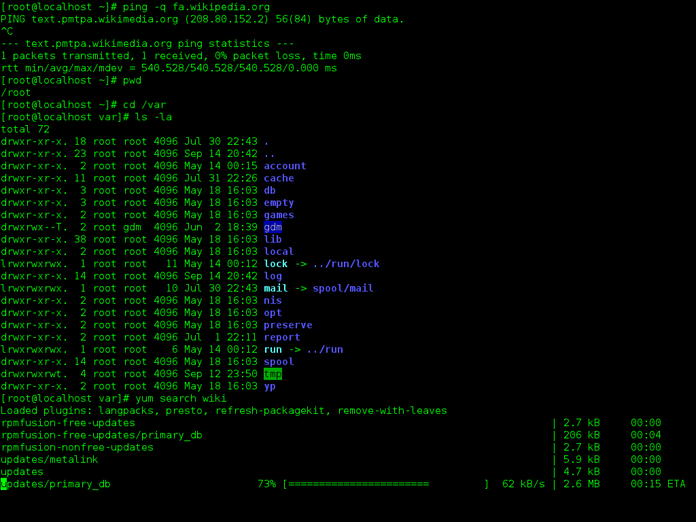
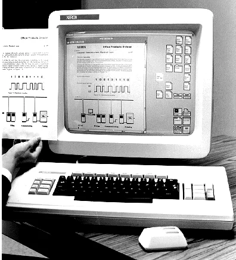
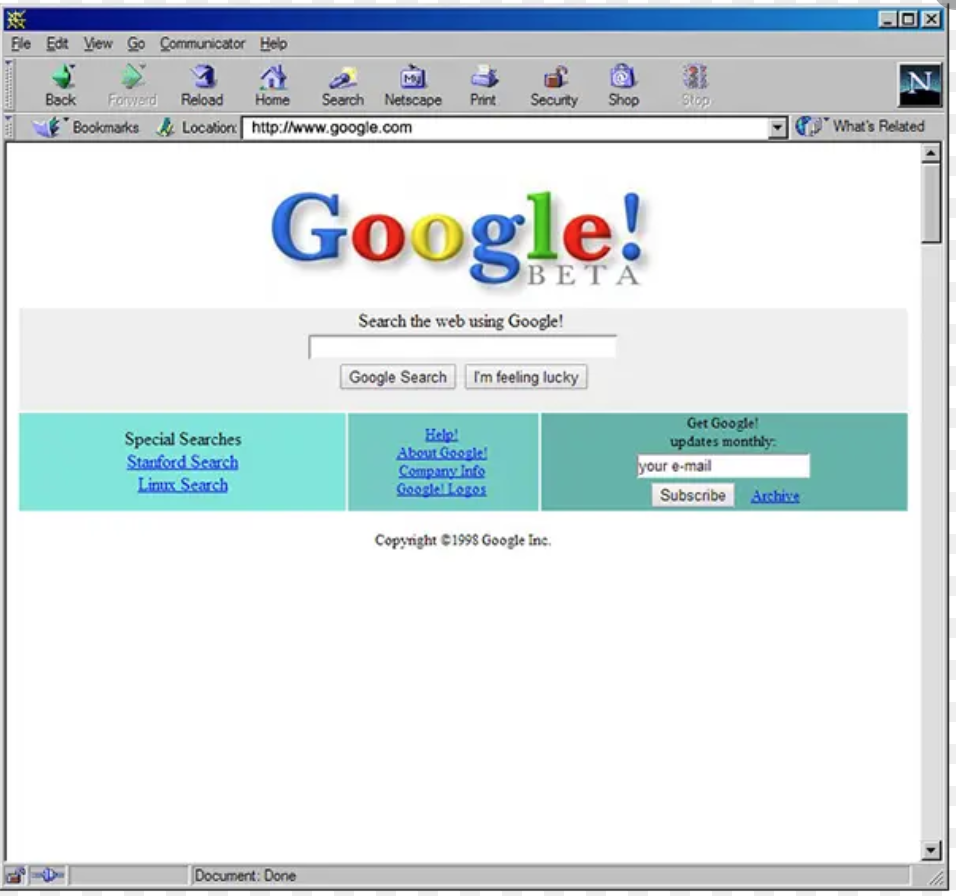

O que é IHC
A Interação Humano-Computador é uma área da ciência que estuda a relação entre o ser humano e sistemas computacionais, com o objetivo de analisar e aprimorar a tecnologia na sociedade.
Principais Características
- Feedback Contínuo: O sistema sempre avisa o usuário sobre o que está acontecendo (ex: uma barra de carregamento ou som de confirmação).
- Prevenção e Tratamento de Erros: A interface evita que o usuário cometa falhas e explica eventuais erros de forma simples.
- Consistência e Padronização: Cores, botões e termos seguem o mesmo padrão em todas as telas.
- Baixa Carga Cognitiva: Se a interface for complexa demais ou exigir que o usuário decore informações de cabeça, a pessoa desiste de usar o sistema.
Evolução ao longo das décadas
1940 - 1960: Processamento em Lote (Batch)
A interação era indireta, feita por meio de cartões perfurados e chaves físicas. Não havia tela ou feedback em tempo real; o operador entregava o programa e aguardava horas pelo resultado impresso.

1970: Interfaces de Linha de Comando (CLI)
Com os terminais de vídeo e teclados, surge a interação por texto em tempo real (como UNIX e MS-DOS). Exigia alta carga de memorização de comandos e sintaxe rígida, sendo restrita a especialistas.

1980: A Era das Interfaces Gráficas (GUI) e o Paradigma WIMP
Popularizadas pelo Xerox Alto, Apple Macintosh e posteriormente pelo Windows, surgem as telas visuais baseadas em WIMP (Windows, Icons, Menus, Pointer). O uso do mouse e a metáfora da "área de trabalho" democratizaram o uso de computadores.

1990: Hipermídia e a Chegada da Web
A interação expandiu-se para navegadores de internet. O foco mudou para a navegação por links (hipertexto), arquitetura de informação e padrões visuais universais para páginas web.

2000: Computação Móvel e Telas Sensíveis ao Toque
A chegada dos smartphones e tablets introduziu a Interface Natural de Usuário (NUI) via gestos multitoque (toque, pinça, deslize). A localização do usuário e a resposta tátil (háptica) tornaram-se parte central da interação.
2010: Interfaces de Voz, Vestíveis e Ubiquidade
Surgem assistentes virtuais por voz (Siri, Alexa), smartwatches e sensores integrados ao ambiente. A computação tornou-se invisível e pervasiva, interagindo por meio de linguagem natural e contexto.
2020+: IA Generativa, Interfaces Cérebro-Computador e XR
A interação passa a ser impulsionada por Inteligência Artificial conversacional e preditiva, Realidade Mista/Aumentada (espaço tridimensional) e testes práticos com Interfaces Cérebro-Computador (BCI), reduzindo ainda mais as barreiras físicas entre humanos e máquinas.